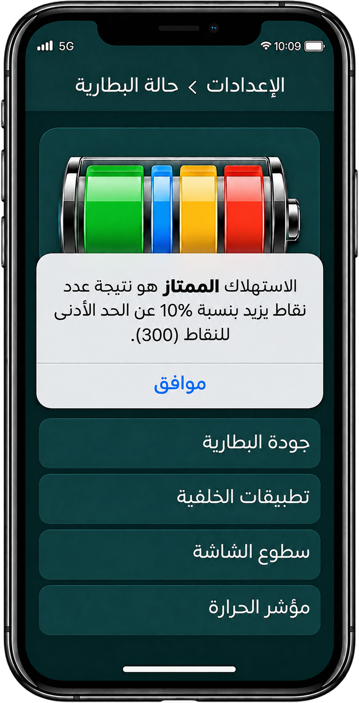

أحسنتم!
إذا لم تُجيبوا إجابةً صحيحة عن بعض الأسئلة،
فمن المهمّ أن تعرفوا ما الذي لم يتّضح لكم بعد.
يتكوّن من 4 بنود. عليكم أن تنجحوا في 3 منها على الأقل.
في المساء الذي سبق الرحلة لاحظتم أن بطاريتكم تنفد بسرعة
ففحصتم البطارية.
واكتشفتم أن هناك أربعة معايير تؤثر في عمر البطارية:
يُعطي الفحص كل معيار عددًا من نقاط استهلاك البطارية.
انطلقتم في بحث سيكشف لكم حالة بطاريتكم.
في الفحص الأول اكتشفتم أن جودة بطاريتكم حصلت على
48 نقطة، وهذا يشكّل 16% من التأثير في عمر البطارية.
ليكون الاستهلاك سليمًا، يجب أن تصل البطارية إلى 100% من النقاط المستهدفة.
أ. وفقًا لهذه المعطيات، ما مجموع النقاط المطلوب ليكون استهلاك البطارية سليمًا؟
استمر الفحص وظهرت المعطيات التالية:
التطبيقات في الخلفية تستهلك 32% من البطارية.
سطوع الشاشة يستهلك 28% من البطارية.
لم يُظهر الفحص بعد معطيات سخونة البطارية.
ب. ما النسبة المئوية التي تستهلكها سخونة البطارية من مجموع نسب الاستهلاك؟
وجدنا أن مجموع النقاط هو 300.
ونعرف الآن أيضًا النسبة المئوية التي يستهلكها كل معيار.
ج. احسبوا كم نقطة تُمنح لمعيار سطوع الشاشة. تذكّروا – المعطيات موجودة على شاشة الهاتف.
عند انتهاء الفحص، ظهرت على الشاشة الرسالة التالية:
يكون الاستهلاك ممتازًا إذا كان عدد النقاط أعلى من الحدّ الأدنى للنقاط (300) بنسبة 10% أو أكثر.
د. هل استهلاك هاتفكم سليم؟ أجيبوا عن جميع الأسئلة التالية:
يلزم 300 نقطة على الأقل ليكون الاستهلاك سليمًا. في نهاية الفحص، كان عدد النقاط
التي حصل عليها هاتفكم 324 نقطة.
